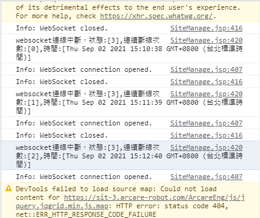

如如-智慧軟體機器人
如如-智慧軟體機器人
如何解決經常被踢出系統？
版本：
| 日期 | 版號 | 備註 |
|---|---|---|
| 2021-09-02 | 2021090005 | 初版 |
說明：
當前端使用反向代理機制作為代理RTE服務時，時常因為操作系統靜止時間過久，被踢出系統。
環境需求：
| 項目 | 內容 | 備註 |
|---|---|---|
| 帳號 | 請準備站台安裝所屬伺服器的系統管理員帳號 | |
| RTE | 8.10.0 及以後版本 | |
| 反向代理服務 | 以nginx為例 |
問題說明：
基於服務統一管理或是安全通訊需求，會在RTE前端增加反向代理服務，以便代理內部RTE服務提供給外部使用者使用，而由於安全考量多數反向代理服務都有連線timeout時間設定及預設值，如果發現時常被踢出系統可能是timeout時間過短所致，以下說明如何確認問題，並以nginx作為反向代理服務時如何設定timeout時間設定。
1. 檢查問題
開啟開發人員工具，檢查console是否短時間重複出現websocket連線中斷！

而站台管理中[企業設定] > [系統閒置登出時間]設定時間大於被踢時間

2. 解決方式
修改timeout時間以便符合你們的使用習慣，RTE如果websocket被中斷五次過程中使用者都沒有執行與伺服端的互動例如新增、修改、查詢、刪除，使用者帳號就會被踢出系統，因此適度調整timeout可以讓你避免發生服務中斷，以nginx為例，預設值為60秒中斷五次是5分鐘，基於安全考量建議可以修改為75秒則中斷五次是6分秒。
請於 server{}標籤中的location增加proxy_connect_timeout設定，如下：
location /ArcarEng/ {
proxy_pass http://backend/ArcarEng;
proxy_connect_timeout 75s;
proxy_http_version 1.1;
proxy_set_header Upgrade $http_upgrade;
proxy_set_header Connection "upgrade";
}